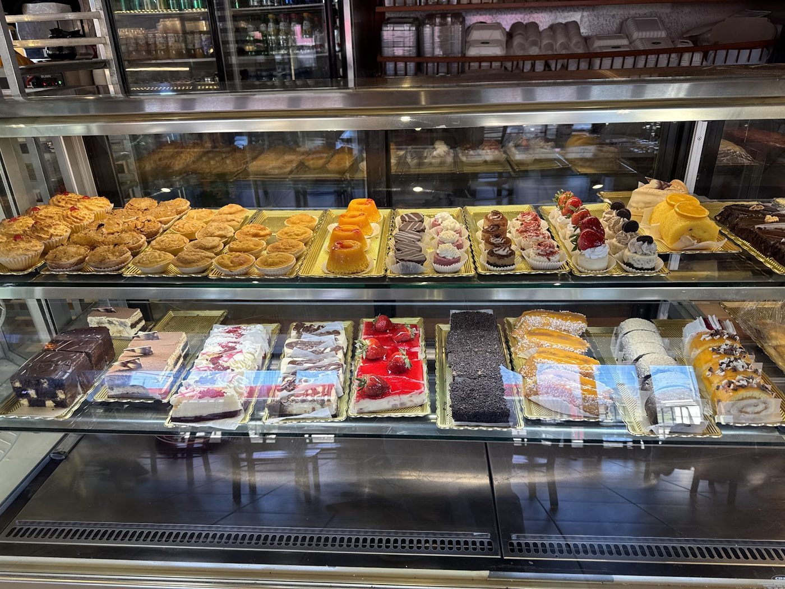

Portuguese bakery & café · St Clair West, Toronto
Custard tarts, savoury patties and fresh bread, from early morning.
A Portuguese pastelaria on St Clair Avenue West with a full pastry case, savoury bites, bread and coffee, plus a café to sit down in. Reviewers single out the codfish and chicken patties and the Portuguese and orange tarts.
- Portuguese & orange tarts
- Codfish & chicken patties
- Fresh bread
- Coffee & café seating
From the counter
Pastries & tarts
Portuguese custard tarts, orange tarts, croissants, cakes and individual desserts, per reviewers and the photos on the bakery’s Google listing.
Savoury bites
Codfish and chicken patties, chicken balls and sandwiches. One reviewer calls the patties “absolutely delicious.”
Bread & coffee
Bread rolls and sourdough to take home, plus espresso, americanos and milky coffees served at the table.
This list comes from the bakery’s Google listing (categories: bakery, pastry shop), its photos and its reviews. No prices are shown because the bakery doesn’t publish a price list online.
What to order
The patties and the tarts live up to it
“I highly recommend the savory codfish and chicken patties—absolutely delicious! The Portuguese and orange tarts live up to their reputation.”
Alice Kwan, Google review · photo from the review
What customers say
4.1 ★ from 891 Google reviews (checked Nov 5, 2026). Quotes are word for word. Each one says where it was read: on the Google listing itself, or on a public page that copies reviews. Google shows only a handful of reviews without signing in, so some quotes come from directory copies that don’t show reviewer names.
★★★★★
This is my second time buying from this Portuguese bakery, which I discovered after the Brazil festival, and it exceeded my expectations. The renovation feels a bit dated, and the presentation is average, but the taste and service are incredible. I highly recommend the savory codfish and chicken patties—absolutely delicious! The Portuguese and orange tarts live up to their reputation. Prices are budget-friendly, with most items being very affordable. Highly recommended!
★★★★★
My family of five visited Caledonia Bakery on the day of the Portugal Day Parade, and we had an amazing experience thanks to Emma. Despite how incredibly busy everything was, Emma provided outstanding customer service from start to finish. She was serving all of the customers on the outdoor patio while also keeping up with the constant flow of people ordering from the bifana stand outside. Even with so much going on, she remained friendly, attentive, and professional.
Emma never let the busy atmosphere affect the quality of her service. She made sure everyone on the patio was taken care of, checked in on customers, and always had a smile on her face. Her positive attitude and dedication made our family’s visit enjoyable, even during one of the busiest days of the year.
Employees like Emma are hard to find, and she truly deserves recognition for her incredible work ethic. Caledonia Bakery is lucky to have someone so hardworking and dedicated on their team. I hope they continue to hire more employees like Emma who genuinely care about providing excellent customer service. Thank you, Emma, for making our Portugal Day visit such a great experience!
★★★★★
I had a wonderful experience at Caledonia Bakery & Pastry! 🥐☕️ The food and the overall atmosphere are great, but what truly makes this place special is the exceptional customer service. ✨
I specifically want to highlight the Brazilian staff members—they are incredibly polite, kind, and always welcome you with a warm smile. 🇧🇷😊 It is so refreshing to experience such genuine hospitality. They really go out of their way to make every customer feel valued and appreciated.
I highly recommend visiting this bakery, not just for the delicious treats, but for the lovely people working there! 👏✨
★★★★★
This Portuguese bakery is an absolute delight! From the moment I walked in, the staff were friendly, polite, and genuinely welcoming, making the experience feel personal and inviting. The bakery itself is filled with fresh, beautifully presented items, and every pastry I tried was absolutely delicious — perfectly baked and full of flavor.
Whether you’re stopping by for a quick treat or picking up something special to share, this bakery delivers on both quality and hospitality. Highly recommend!
★★★★★
The attendance/wait staff are always so welcoming. The coffee it's actually good, I only like americanos and expressos, so can not really tell you about the rest since I haven't try them, but those are good coffee. The pastry has been alway fresh ,haven't gor any bad one at all. Highly recommended.
Star rating not shown in source
Enjoyed the pastries and table service. Very lovely server. And the sourdough bread we brought home was really great. Recommend!
Star rating not shown in source
Amazing service!!! I loved the chicken balls and croissants 🥐
In the bakery
Real photos from Caledonia Bakery & Pastry’s public Google listing and its customers’ reviews. Tap to enlarge.
Visit the bakery
1492 St Clair Ave W
Toronto, ON M6E 4S3
| Monday | 5 a.m.–9 p.m. |
|---|---|
| Tuesday | 5 a.m.–9 p.m. |
| Wednesday | 5 a.m.–9 p.m. |
| Thursday | 5 a.m.–9 p.m. |
| Friday | 5 a.m.–10 p.m. |
| Saturday | 5 a.m.–10 p.m. |
| Sunday | 7 a.m.–10 p.m. |
These are the hours on Google today. Some directories list different hours (Yelp says until 11 p.m., another directory says Sundays 5 a.m.–8 p.m.), and some give the postal code as M6E 1C7. Call if you’re cutting it close. Follow the bakery on Facebook.